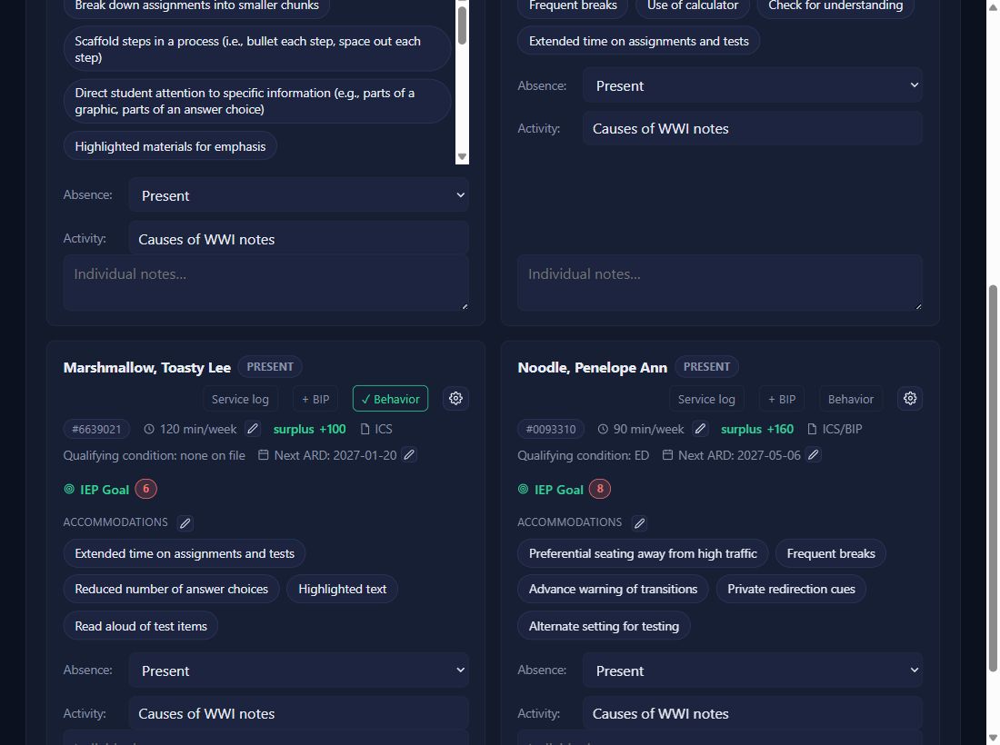
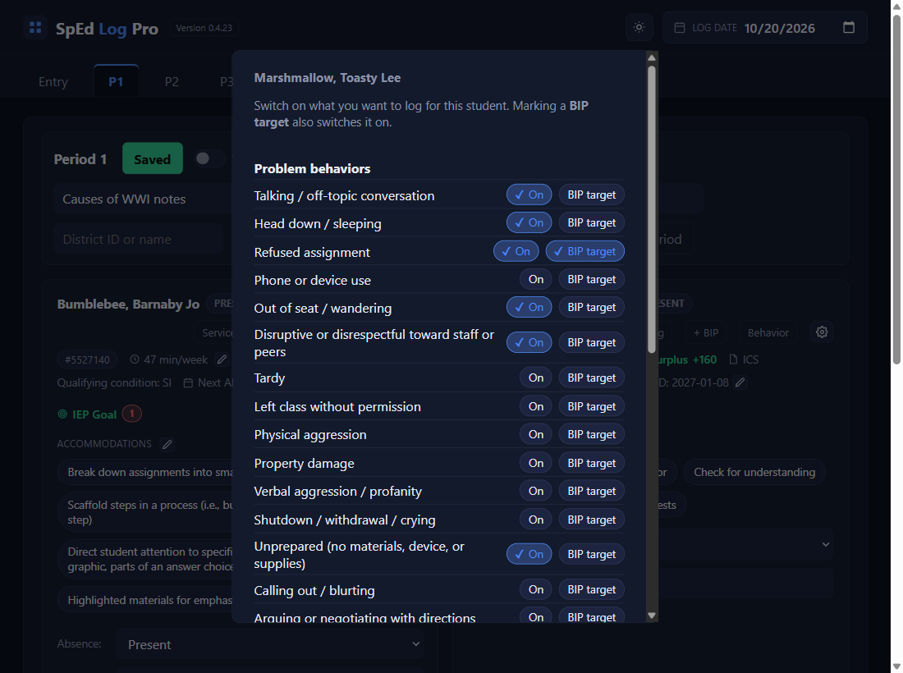
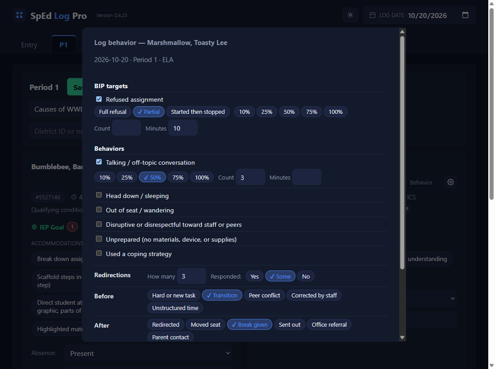
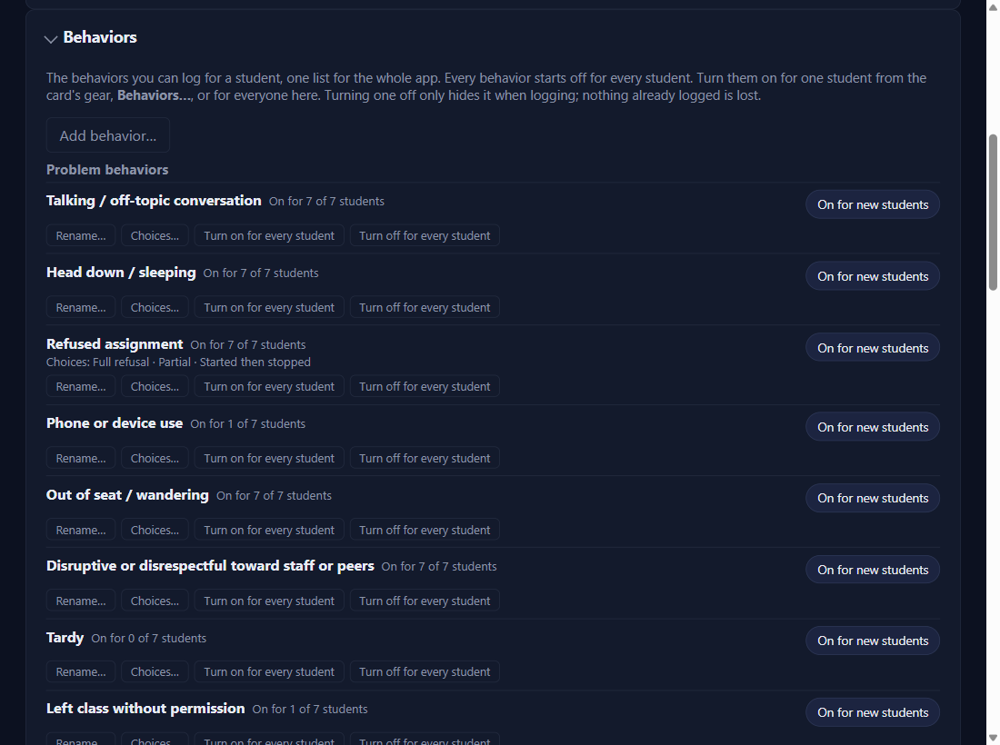

Log behavior
Turn behaviors on for a student
Gear → Behaviors…
Every behavior starts off for every student, so nothing shows when you log until you turn some on. Click the gear on the student's card, then Behaviors….

Switch on what you'll log, and mark BIP targets
Click On beside each behavior you want to log for this student. Click BIP target for the ones their Behavior Intervention Plan targets: that switches it on too, and it shows first when you log. The app never reads the BIP PDF, so you mark the targets yourself. Scroll down for Redirections, Before, and After, which have their own switches. Then click Save; the line says what changed, like Turned on 3, turned off 1, BIP targets 2.

Log what happened
Click Behavior on the card
On the period tab, with the right Log date, click Behavior on the student's card. A pop-up titled Log behavior — name opens, with the date, the period, and its subject under the title.
Check what happened, add details if you like
BIP targets come first, then the student's other behaviors. Check each one that happened. A checked behavior offers optional details on its line: its choices (like Partial for Refused assignment), % of class, a Count, and Minutes. Every detail is optional; a checked box alone is fine.
Below them: Redirections (how many, and whether the student responded: Yes, Some, No), Before and After chips (tap as many as fit), and a Note.

Save
Click Save at the bottom. The pop-up closes and the button turns green: ✓ Behavior. Click it again any time that day to change the entry, or to Delete entry.
The list for everyone: Settings → Behaviors
Add, rename, and turn on for everyone
Settings → Behaviors is the one list for the whole app. Add behavior… adds your own (a name, and choices one per line if you want). Each behavior has Rename… (to match a BIP's wording; past entries show the new name), Choices…, Turn on for every student and Turn off for every student (each asks first, with the count), and an On for new students switch for students you add later (saved with the section's Save).

✓ You'll know it worked
- The card's button reads ✓ Behavior in green for that day and period.
- The day's service log line has
Behavior: …in column G, before your note.
✕ Avoid these
- Expecting yesterday's checks. Nothing carries over; every entry starts blank.
- Logging on an absent day. The button is greyed while the student is absent or coded.
⚠ If you see this
No behaviors are turned on for this student.Click Turn some on right there, switch some on, Save, then Back.